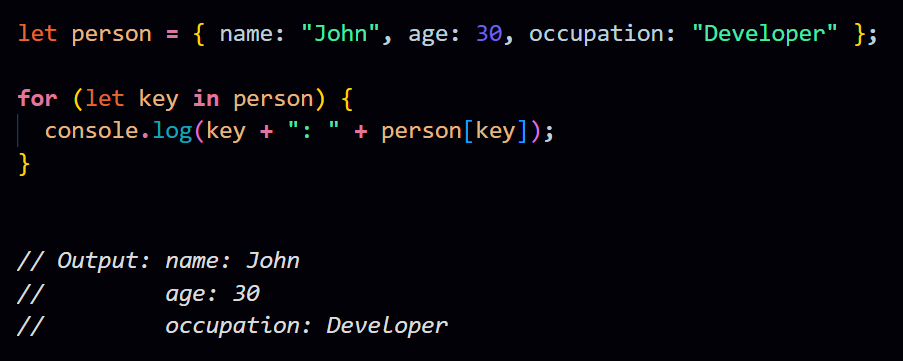

Q. What are loops, and what do we need them? Explain different types of loops with their syntax and examples.
Loops are programming constructs that allow you to repeatedly execute a block of code as long as a certain condition is true. They are essential for automating repetitive tasks, iterating over data structures, and handling scenarios where you need to perform the same set of actions multiple times.
There are several types of loops in most programming languages:
-
For Loop:
- The 'for' loop is used when you know the number of iterations in advance.
- Syntax:
- Example:
-
While Loop:
- The 'while' loop is used when you don't know the number of iterations in advance but have a condition that determines when to stop.
- Syntax:
-
Example:

-
Do-While Loop:
- The 'do-while' loop is similar to the 'while' loop, but it guarantees that the code block is executed at least once, as the condition is checked after the first iteration.
- Syntax:
- Example:
-
For...In Loop:
- The 'for...in' loop is used to iterate over the properties of an object.
- Syntax:
- Example: 
-
For...Of Loop:
- The 'for...of' loop is used to iterate over the values of an iterable object (e.g., arrays, strings).
- Syntax:
- Example:
These loop structures enable you to efficiently handle repetitive tasks, process collections of data, and iterate over sequences in your code. The choice of which loop to use depends on the specific requirements of your program and the nature of the data you are working with.